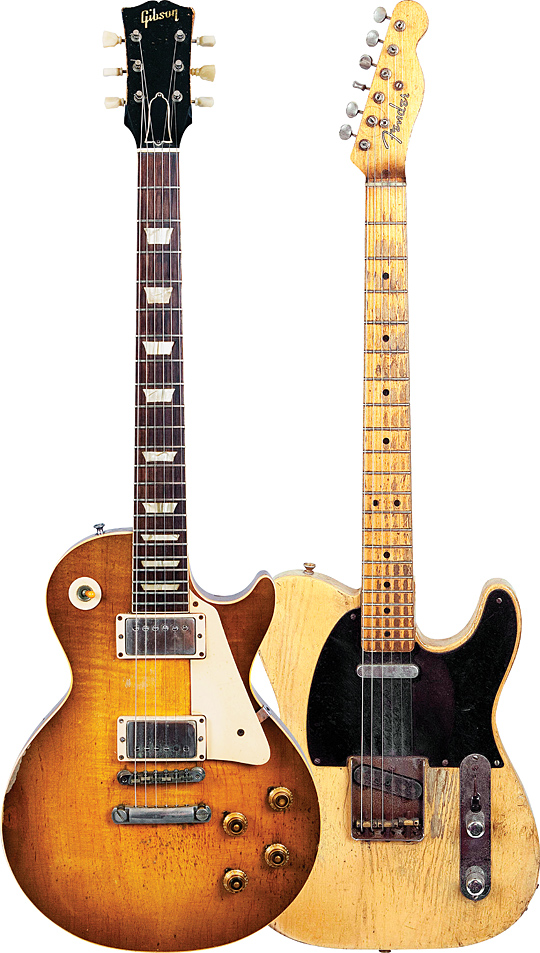

Guitar Brands
Fender or Gibson
Here is a quote from Jeff Beck regarding guitars.
The Les Paul was more challenging because of the weight of it, but the tone was there that the Fender will never have and vice versa. So you have to make a decision as to what you're going to have as your main instrument. After seeing Hendrix, I thought, 'I'll stick with the 'Strat.' Jeff Beck"DogTime Dog Information Guitar 